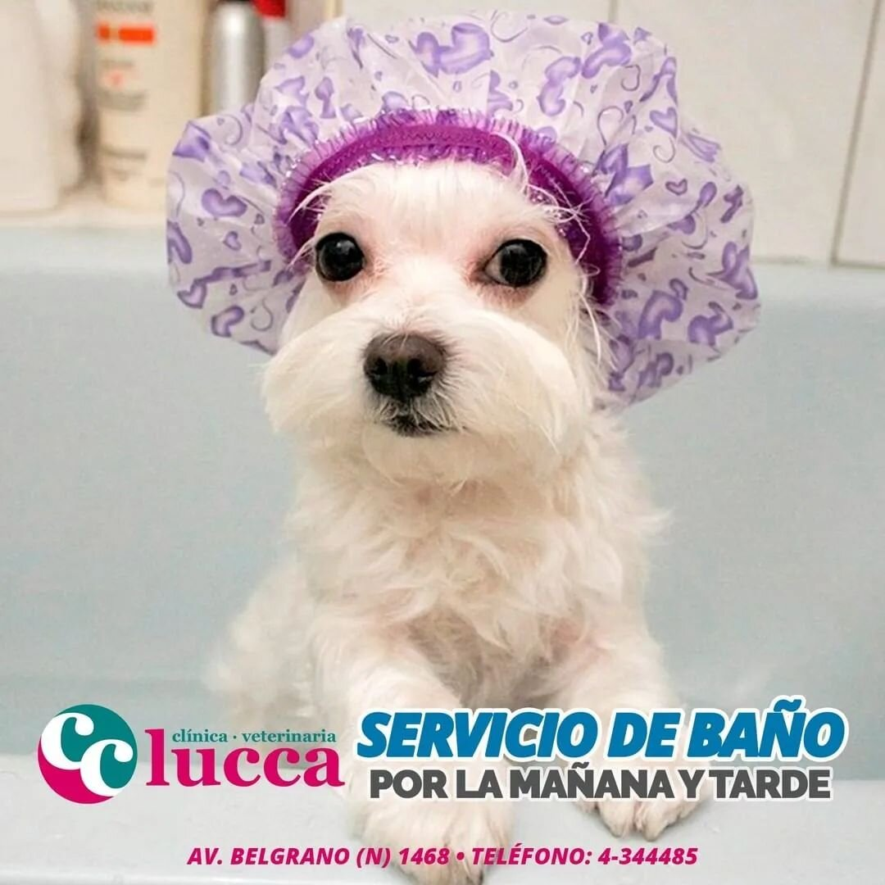
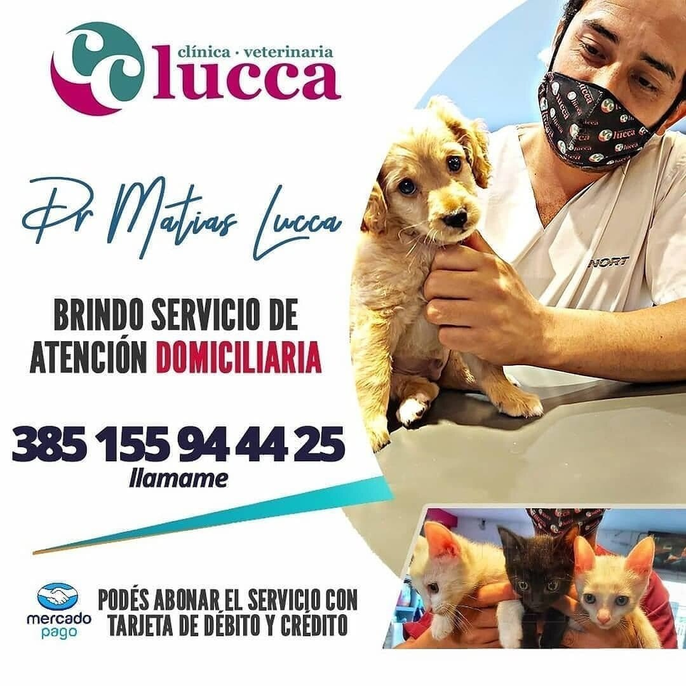

Para turnos de peluqueria:
Los turnos de peluqueria, se reservan llamando al numero telefonico de la veterinaria (4295758). la duración de cada corte, en promedio, es de 30 a 40 min. y al igual que el precio, esto dependera del tamaño de su mascota, y tambien de la cantidad y la condicion de su pelaje

Para consultas:
Las consultas se atienden por orden de llegada, pueden ser o comunes u oftalmológicas, las primeras tienen un precio de $800, mientras que las segundas valen $1100, sin contar los medicamentos que pueda llegar a necesitar el paciente.

Para Urgencias:
Nuestro veterinario cuenta con atención 24hs para urgencias, llamando a su numero privado (3854698974). Tambien cuenta con consultas a domicilio las cuales tienen un precio mas elevado